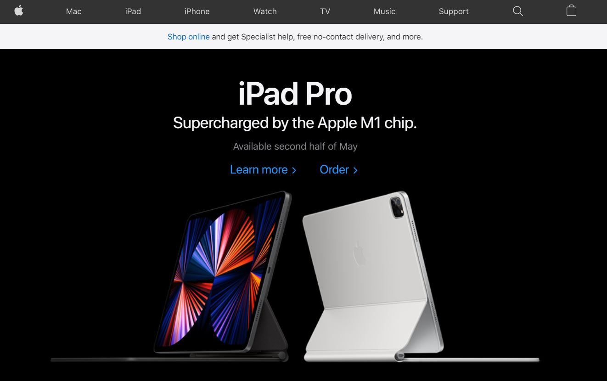

Design Principles Not in Theory
Contrast

Although I thought the Google homepage was a great candidate for white space, I think it is better displayed as contrast. Because the page is almost entierly white, the use of a variety of domainte colors draws the attention of the eye. Naturally the eye flows down, but the only other contrast to the white is the search bar. In total it sums up who and what Google is with almost no words.
Viusual Hierarchy

The New York Times is one of the most iconic news platforms, so with so much information constantly being displayed on their screen, I wanted to draw attention to the visual hierarchy. At the top is all of the sections of the paper whichdraw little attention to themselves but add easy access if what you are looking for is not headline news. The section that the eye is immedietly drawn to is the headliner. That section is the largest and has a picture.
Whitespace

Apple is the king of simplicity and effectively using whitespace. Simplicity is a key component of their image. Although in the picture listed the white space is black. What using good white space does is give the user only a particualr icon to view. It's importance is emphasized because it is the only thing on the page.